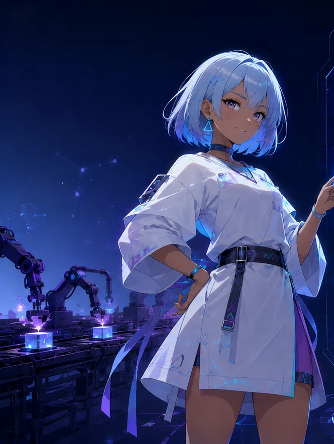

出発点
記事自動生成
一つのPromptから記事を作る、シンプルな自動化から始まった。
LOCAL AI FOUNDRY再定義 / REPOSITIONING
AIを自動化する場所から、AIと仕事を設計する場所へ。
人間が目的と責任を持ち、AIへ仕事を委譲する。契約、検証、レビュー、証拠、変更管理まで含めて、AIの仕事を成果物として成立させるためのローカルAI開発・制作基盤。
01 / 進化 EVOLUTION
問題を一つずつ潰した結果、LFの対象は記事生成から、AIを仕事として成立させるための開発・運用基盤へ広がった。
一つのPromptから記事を作る、シンプルな自動化から始まった。
役割を分け、DTO・Gate・Retry・Reviewで受け渡しと失敗を管理した。
制作、開発、検証、Evidence、Governanceまでを一つの運用モデルとして扱う。
自動化は出発点だった。作っていたのはFoundryだった。
02 / 新しいLF HUMAN-DIRECTED FOUNDRY
目的と最終判断を人間に残し、制御・管理の層を通してAIチームへ仕事を渡す。
何を作り、どこまでAIへ任せ、何を承認するかを決める。
決めるAIの仕事を曖昧にせず、止める条件と検証方法を仕組みにする。
制御する定義された責務を担当し、決められた契約の中で実行し、検証済みの結果を次へ渡す。
実行する文章・画像・成果物
Prompt・DTO・Tooling
Dify・n8n・Ollama・ComfyUI
Gate・Retry・Review
Evidence・State・Publication
03 / 人とAIの役割 HUMAN × AI
AIを使う。しかし、目的・責任・承認を人間から消さない。業務ごとの工程は変わっても、人間が境界を決め、AIの仕事を検証し、最後に判断する。
04 / 実証プロジェクト REFERENCE IMPLEMENTATIONS
LFは一つの巨大システムを作るだけではなく、複数のReference Implementation（RI）を並行して動かし、共通する制御パターンを実証していく。
記事制作 / ARTICLE PRODUCTION
最初のReference Implementation。Difyを中心に記事制作を分業し、Contract・DTO・Gate・Retry・Evidenceの候補を見つけた。
ドキュメント制作 / DOCUMENTATION PRODUCTION
Internal文書とPublication RuleからPublic候補を生成し、Review・Correction・Consistency・Evidenceを経てHuman Gateまで進める実証。
次の業務領域 / NEXT DOMAIN
対象業務はまだ未確定。RI#1とRI#2で再現したControl Patternを、さらに別の業務へ適用してCore Candidateを絞り込む。

％ではなく、現在どの段階にいるかを表示
05 / 実装と公開資料 PROOF OF WORK
公開資料への導線は減らさない。重複した入口を整理し、「何を知りたいか」から辿れる形にまとめる。
全体構成と責務境界。
開く ↗ 考え方を知る / PRINCIPLESContract・Verify・Recover。
開く ↗ 現在地を見る / STATUSProject StateとCurrent State。
開く ↗ 次を見る / ROADMAP次の検証と進行方向。
開く ↗ 公開境界を見る / PUBLICATIONInternal / Publicの責務。
開く ↗ 進化を追う / RELEASES公式サイトとPublic Artifactの履歴。
開く →06 / 現在地 CURRENT STATE
v4.1ではHuman × AIの責務境界をCurrent Architectureへ合わせ、FOUNDRY PULSEと来訪者カウンターを追加。既存の並行プロジェクト表示を残したまま、Foundry全体の現在地をより動的に見せる。